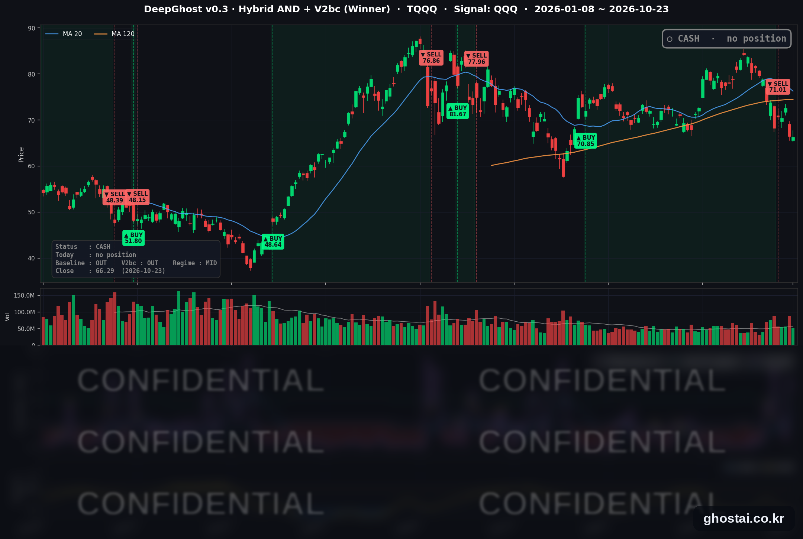

나스닥 2주 연속 하락
· Ghost.AI 데일리 리포트
👻 매일 시그널과 히스토리를 홈페이지에서 한눈에 → www.ghostai.co.kr
회원 페이지 안내 — 회원 가입하시면 커버리지 전 종목의 원본 시그널과 분석 레포트를 매일 확인하실 수 있습니다. 회원 페이지는 블로그·유튜브보다 먼저 업데이트됩니다. 지금 베타 회원을 받고 있으며, 이메일과 필명만으로 가입하실 수 있고 서비스 사용료는 받지 않습니다. 이메일 확인 후 바로 이용하실 수 있습니다.
한 줄 요약: 이번 주 S&P 500 구성종목의 3분의 2가 올랐지만, AI 하드웨어주가 약해 나스닥 종합은 0.71% 내려 2주 연속 하락했습니다. 금요일에는 다우가 1.23% 내렸고, 10년물 국채 금리는 한 주 동안 11.0bp 내려 3주 연속 하락했습니다. 전략은 월요일 시가에 TQQQ 를 매도한 뒤 한 주를 현금 보유로 보냈고, 오늘도 새 신호는 없습니다.
📊 오늘의 매매 신호
| 항목 | 내용 |
|---|---|
| 오늘의 신호 | 🟡 신규 신호 없음 — 전략은 현금 보유를 유지합니다 |
| 포지션 상태 | 💵 현금 보유 중 (OUT OF POSITION) |
| 현금 보유 기간 | 2026-10-19 ~ (5일째) |
| TQQQ 종가 | $66.29(-0.20%) |
TQQQ 시그널 — OUT OF POSITION
현재 상태: 현금 보유 중 | 신규 신호 없음

전략은 10월 16일(금)에 나온 매도 신호에 따라 19일(월) 미국 장 시가 71.01달러에 TQQQ 를 매도했고, 이번 주 닷새를 모두 현금 보유로 보냈습니다. 8월 6일 시가 70.85달러에 매수해 51거래일 보유한 이번 거래의 전략 수익률은 +0.23% 입니다.
| 날짜 | TQQQ 종가 | 매도가(71.01달러) 대비 |
|---|---|---|
| 10/19(월) | $70.64 | -0.52% |
| 10/20(화) | $70.41 | -0.84% |
| 10/21(수) | $72.61 | +2.25% |
| 10/22(목) | $66.42 | -6.46% |
| 10/23(금) | $66.29 | -6.65% |
매도 뒤 TQQQ 가 매도가 위에서 마감한 날은 수요일 하루였습니다. 목요일 AI 하드웨어주가 크게 내리면서 8.52% 내렸고, 금요일에는 66.29달러로 마감해 7월 31일 이후 가장 낮은 종가를 기록했습니다. 6월 2일 최고 종가(87.22달러)보다 24.00% 낮습니다. 이번 매도가 계속 보유한 것보다 나았는지는 다음 매수 가격이 정해진 뒤에 판단할 수 있습니다.
이번 주 QQQ 는 0.76% 내렸지만 TQQQ 는 2.81% 내려, QQQ 하락률의 3배(2.28%)보다 더 내렸습니다. QQQ 의 하루 등락이 +1.21%·-0.10%·+1.05%·-2.86%·-0.01% 로 크게 엇갈린 주였습니다.
오늘 미국 시장 — 시황 요약
지수 마감
| 지수 | 종가 | 등락률 | 주간 (10/16 대비) |
|---|---|---|---|
| S&P 500 | 7,623.68 | -0.52% | -0.47% |
| 나스닥 종합 | 25,955.34 | -0.21% | -0.71% |
| 다우존스 | 52,215.16 | -1.23% | +0.41% |
| 러셀 2000 (IWM) | 275.75 | -0.33% | +1.96% |
| QQQ (나스닥100) | 704.40 | -0.01% | -0.76% |
| TQQQ | 66.29 | -0.20% | -2.81% |
| 반도체 ETF (SOXX) | 478.20 | +0.53% | -3.08% |
금요일 다우의 1.23% 하락은 8월 20일 이후 가장 큰 하루 하락입니다. S&P 500 은 9월 16일 이후 가장 낮은 종가로, 10월 6일 최고 종가보다 2.50% 낮습니다. 한 주 전체로는 S&P 500 과 나스닥이 2주 연속 내렸고, 다우는 3주 연속 올랐으며 러셀 2000(IWM)은 4주 만에 올랐습니다. 사상 최고 종가를 낸 지수는 없습니다.
국채 금리 동향
| 만기 | 10/22 종가 | 10/23 종가 | 전일 대비 | 주간 |
|---|---|---|---|---|
| 3개월 | 4.022% | 4.032% | +1.0bp | -3.8bp |
| 5년 | 4.768% | 4.805% | +3.7bp | -9.4bp |
| 10년 | 4.953% | 4.988% | +3.5bp | -11.0bp |
| 30년 | 5.287% | 5.315% | +2.8bp | -12.1bp |
전날 크게 내린 금리가 금요일에는 소폭 올랐고, 10년물은 이틀 연속 5% 아래에서 마감했습니다. 10년물은 3주 연속 내렸고(5.277% → 5.244% → 5.098% → 4.988%), 이번 주 하락은 목요일 하루(-19.3bp)에 몰렸습니다. 10년물과 3개월물의 차이는 95.6bp 로 역전은 없습니다. 금리는 3주째 내렸지만 기술주 약세는 이어졌고, 보도들은 그 이유로 AI 투자 비용 우려를 들었습니다.
연준 발언 & 금리 패스
- 발언 없음 — 10월 17일(토)부터 29일(목)까지 FOMC 전후 발언 금지 기간입니다.
- 로이터는 CME FedWatch 기준 투자자들이 다음 주 회의에서 금리 동결을 예상한다고 전했습니다.
- 정책금리는 9월 16일 인상 뒤 3.75~4.00%입니다. 이번 주 금리 선물은 인상 기대를 낮췄지만, 금요일 발표된 10월 PMI 의 판매가격 상승과 유가 상승은 반대 방향 재료입니다.
오늘의 핵심 이슈
- 금요일에는 AI 하드웨어주가 보합권이었고 나머지 업종이 내렸습니다. S&P 500 구성종목 중 오른 종목은 26%뿐이었습니다. 아메리칸익스프레스는 실적이 예상을 웃돌았지만 인력 약 5% 감축을 발표한 뒤 3.68% 내렸고, 스페이스X 가 미국 기지국 8만 곳 이상을 쓰는 방안을 협의 중이라는 블룸버그 보도에 AT&T(-7.96%)와 T모바일(-7.71%)이 크게 내렸습니다.
- 이번 주에는 AI 하드웨어주와 나머지 업종이 날마다 엇갈렸습니다. S&P 500 의 AI 하드웨어 관련 52종목은 주간 등락률 중간값이 -2.10%, 나머지 441종목은 +1.68% 였습니다. 구성종목 493개 중 326개가 한 주 동안 올랐지만, 반도체·대형 기술주 비중이 큰 나스닥은 2주 연속 내렸습니다.
- 유가가 다시 올랐습니다. 원유 ETF USO 는 4.32% 올라 올해 가장 높은 종가로 마감했습니다. 로이터는 이란 보안 당국자들이 미국·이스라엘이 다시 공격하면 걸프 지역 해저 통신 케이블을 겨냥할 계획을 세웠다고 전했습니다. 에너지 업종은 21종목 중 18종목이 올랐습니다.
변동성 & 투자심리
VIX 는 2.21% 오른 19.45 로 10월 16일 이후 가장 높은 종가를 기록했습니다. 한 주 전체로는 19.99 에서 19.45 로 조금 내렸습니다. CNN 공포탐욕지수는 21.0 으로 '극단적 공포' 구간에 머물렀습니다(전일 19.8, 1주 전 22.1).
매크로 & 원자재
| 품목 | 종가 | 등락률 | 주간 |
|---|---|---|---|
| 원유 ETF (USO) | $169.53 | +4.32% | +4.80% |
| 금 ETF (GLD) | $366.61 | -0.65% | -4.03% |
- 유가: USO 는 올해 가장 높은 종가이고, 하루 상승률은 9월 10일 이후 가장 컸습니다.
- 금: GLD 는 사흘 연속 내려 7월 16일 이후 가장 낮은 종가로 마감했습니다.
- 경제 지표: S&P 글로벌 10월 PMI 잠정치는 종합 57.6(9월 58.4), 제조업 56.0(예상 55.5)이었고, 판매가격은 2022년 8월 이후 가장 빠르게 올랐습니다. 미시간대 10월 소비자심리 확정치는 48.0, 1년 기대인플레이션은 4.7% 입니다.
주요 종목 동향
| 종목 | 종가 | 등락률 | 주간 | 비고 |
|---|---|---|---|---|
| MU | 877.55 | +2.46% | -0.15% | 전날 -6.26% 뒤 반등 |
| QCOM | 175.91 | +1.78% | +2.21% | |
| INTC | 86.96 | +1.72% | -3.22% | 10/29 장 마감 후 실적 |
| MSFT | 524.51 | +0.66% | -0.86% | 10/28 장 마감 후 실적 |
| AAPL | 347.73 | -0.14% | +1.24% | 전날 사상 최고 종가 |
| AVGO | 321.68 | -0.48% | -2.15% | |
| NVDA | 210.96 | -0.59% | -1.48% | |
| TSLA | 372.22 | -0.63% | +4.93% | |
| AMZN | 248.00 | -0.95% | -0.80% | 10/29 장 마감 후 실적 |
| META | 642.62 | -0.96% | -9.40% | 9/8 이후 최저 종가, 10/21 실적 |
| GOOGL | 320.21 | -1.24% | -5.98% | 7/24 이후 최저 종가, 10/28 장 마감 후 실적 |
| NFLX | 65.85 | -1.79% | -6.64% |
커버리지 12종목 중 4종목이 올랐습니다. 반도체 3종목(MU·QCOM·INTC)과 마이크로소프트가 올랐고, 한 주 동안은 실적을 낸 메타와 실적을 앞둔 알파벳의 하락 폭이 컸습니다.
다음 일정 (미 동부시간)
- 10/27~28 FOMC, 금리 결정 28일(수) 14:00, 기자회견 14:30
- 10/28(수) 장 마감 후 마이크로소프트·알파벳 실적
- 10/29(목) 08:30 3분기 GDP 속보치, 9월 개인소득·지출(PCE 물가) / 장 마감 후 아마존·인텔 실적
Ghost.AI — Quantitative AI Investment
Model: DeepGhost v0.3 | Transformer-Based Deep Learning
Coverage: 14 tickers | Updated every trading day after US market close
⚠️ 본 자료는 정보 제공 목적으로만 작성되었으며 투자 권유가 아닙니다. 모든 투자의 책임은 투자자 본인에게 있습니다. 과거 성과가 미래 수익을 보장하지 않습니다.
[유의사항]
- 본 서비스는 불특정 다수를 대상으로 발행되는 단방향 정보 제공 서비스이며, 투자자 개인의 재산 상황·투자 목적·위험 선호도를 반영한 개별 투자 조언이 아닙니다.
- 고스트에이아이 주식회사는 고객과 쌍방향 의사소통(개별 상담, 맞춤형 자문 등)을 제공하지 않습니다.
- 본 콘텐츠는 투자 권유 또는 매매 주문의 청약·청약의 권유에 해당하지 않으며, 최종 투자 판단 및 그에 따른 손익의 책임은 전적으로 투자자 본인에게 있습니다.
고스트에이아이 주식회사